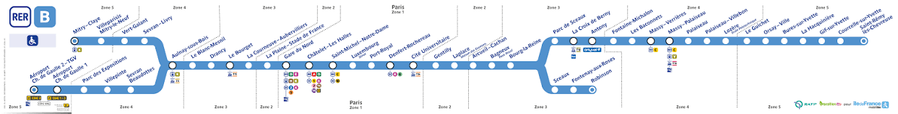
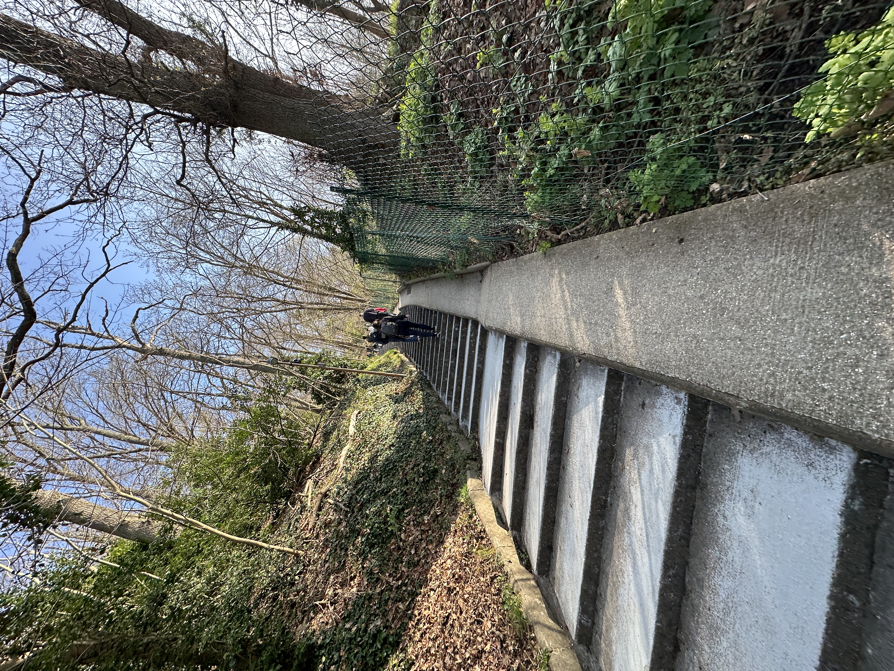
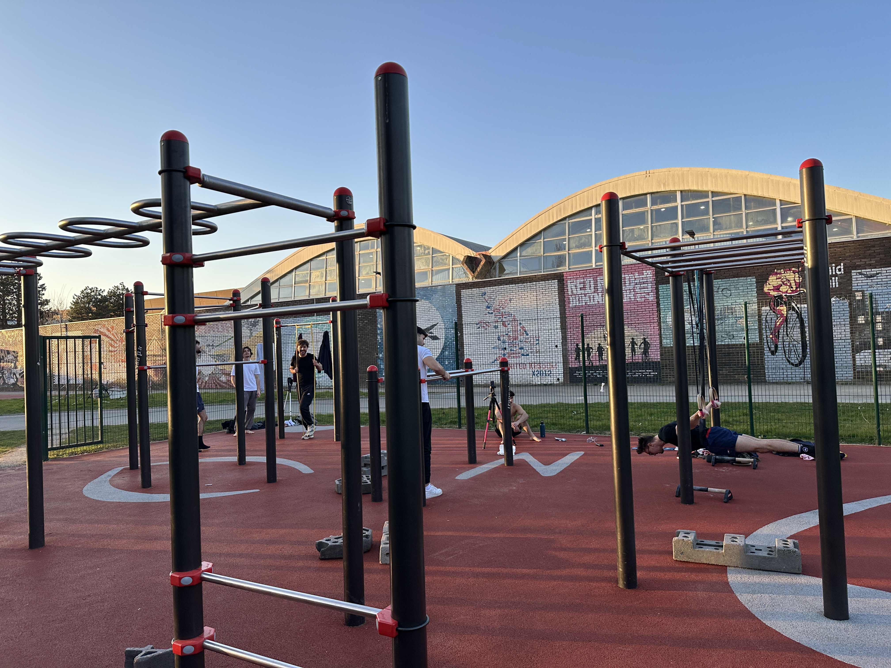
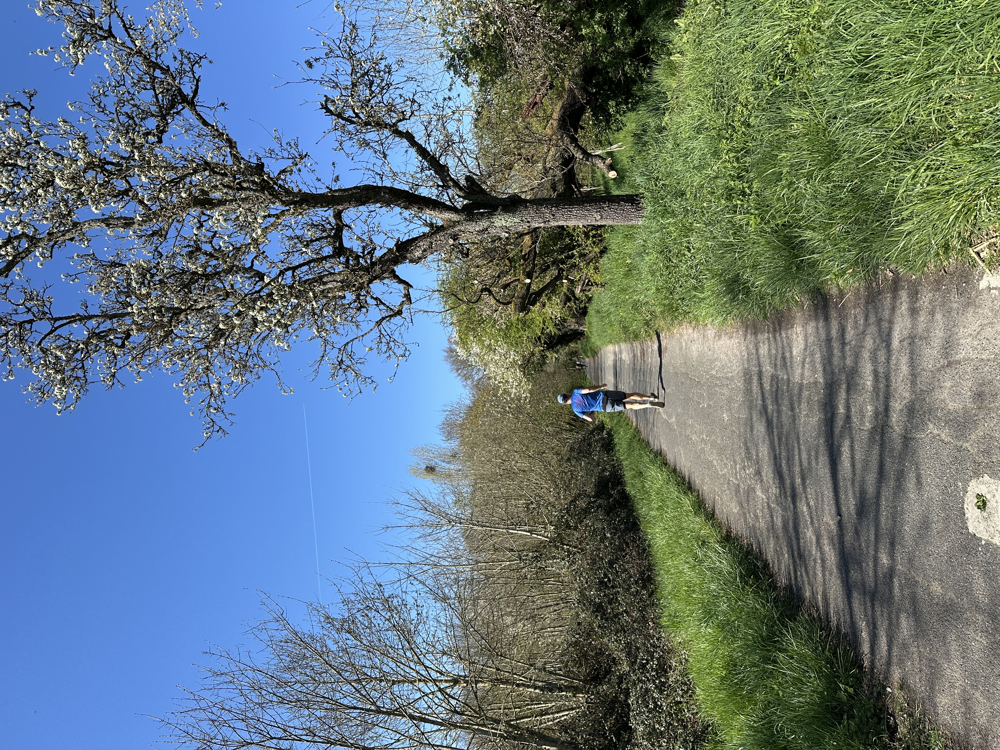

Table of Contents
Reflections on the IP Paris M1 Applied Math and Statistics Program
While I am now going on over a year since completing the Master Year 1 (M1) in Applied Mathematics and Statistics program at the Polytechnic Institute of Paris (IP Paris), I am now back in Paris on a leisurely visit and feel compelled to jot down some of my reflections on my experience as the memories flow back.
I find it useful to reflect on this experience for the following reasons. First, the program is just 3 years old.1 As a result, there is little information to be found about it online (as of writing).2 The program fills a particular niche of being amongst the more accessible Applied Math/Stats master’s in Europe with a stronger focus on theory rather than application.3 Furthermore, the content presented here would have benefited me as I was anxiously searching for some background information to help inform my decision of attending. Thus, I hope it can be of some benefit for future students. Finally, I had a very positive experience, both living in Paris and in completing the program, so reflecting back on the experience has been an enjoyable exercise.
I should note these are personal reflections. Hence, this post mixes some purely informational content with some personal anecdotes.
A few quick clarifying points before proceeding. The ‘Year 1’ prefix in the program name refers to the fact that after completing the first year of the program, you are meant to apply for a separate ‘Year 2’ program (i.e., the M2). The M1 is meant to give general training while the M2 provides the avenue for specialization in a certain area (e.g., data science, optimization, probability). Secondly, while the program is officially hosted at École Polytechnique, the program is officially under the Polytechnic Institute of Paris umbrella.4 Further, while being hosted in France, all courses in the M1 are taught in English - this is not always the case for the M2s. And lastly, the campus itself is no longer hosted in its historic Paris 5e location (it hasn’t been since 1976), but rather, in the southern Parisian suburb of Palaiseau which is located about 30-45 minutes away from Paris.5
Application Experience
My method of deciding which Master’s programs to apply to was driven by two factors: (1) cost of attendance, and, (2) having a master’s thesis track.
Factor (2) ruled out programs like UC Berkeley’s and Stanford’s MS in Statistics which do not have a thesis option. Factor (1) ruled out the vast majority of US (and UK) programs (including Stanford). This lead me to a list of 5 US/Canada Master’s programs that I would recommend to anyone else who finds themselves in the position I was in to look into: 1. Wake Forest MS in Statistics and/or Mathematics 2. UCLA, MS in Statistics 3. UBC, MSc in Statistics 4. UWaterloo, MSc in Statistics 5. McGill, MSc in Statistics & Mathematics
In addition to having a thesis option, each of these had options to get funded - either on merit or via TA/grader duties.
Finding the IP Paris program came thanks to a simple Google search: ‘Master’s in Statistics programs in France’. I was particularly allured by the opportunity to study in France due to my fluency in French and having grown up attending a French-American primary school in the Bay Area. I had also been lucky to have visited Paris on numerous occasions growing up, having thoroughly enjoyed every trip. The IP Paris program in particular was extremely attractive to me as I was looking to regain some theoretical foundations after not having done any serious math for almost 3 years at the time of applying.6
While this program does not have any options for funding or financial aid, the total tuition cost for the whole year came out to approximately 7,000 euros (with even lower rates for EU and French citizens). A drop in the bucket compared to the vast majority of US master’s programs.
One can find the required application materials on the program’s website: - Transcript - Two letters of recommendation - CV/resume - Statement of purpose (SOP)
My impression on admission to the IP Paris program is that the Transcript is rather important. Given that they receive applicants from all over the world, it is often hard to gauge your ability to be successful in the program based on other materials. From my understanding, they will want to see that you have taken, and performed well, in Math courses. The usual suspects: Analysis I & II, calculus, linear algebra, etc…
The specific application process was a bit confusing at the time, as applications were to be done via the MonMaster platform of the French Ministry of Higher Education. The platform felt opaque, and I had to send several e-mails to the IP Paris admission e-mail master-admission@ip-paris.fr to confirm receipt of my application materials.
One final note for this section. The program lists a set of exercises “that a student enrolled in the M1 should be able to solve without any trouble before the beginning of the school year”. I admit, perhaps embarrassingly, I entered the program not having have the ability to solve the many of the problems listed in the exercise sheet. And, to be fully transparent, this made the program, and the first semester in particular, extremely challenging for me. Having now gone through it, I can concur that the exercises were very representative of the foundations required to excel in the courses.
Logistics and housing
Bureaucracy in France is extremely painful to deal with. I don’t think I am alone in thinking this. After accepting the offer, there were several hoops I had to jump through - across multiple French governmental entities - to be able to successfully move to France and officially enroll in the program. I wish I had logged down every step of the process as it transpired, but more details of the registration experience are alluding me at the moment. What I can recommend is to be extremely diligent about e-mailing (and even calling) all relevant agencies to ensure you are still on track and that your materials are received.
Off the top of my head, the biggest pain point was obtaining the student Visa. Several other steps required to register for the program required a student Visa. Thus, I recommend paying particular attention on this step. I also recall one student in my cohort having to start the program several weeks late due to Visa issues.
As a quick google search will show (and as I have previously mentioned), IP Paris is located in the city of Palaiseau.I would highly recommend anyone attending to live near an RER B line station if you will not be walking distance from campus. Particularly, I think living near Massy-Palaiseau station is highly beneficial as it makes access to Paris much easier.7 In addition, you also get easy access to the Orly airport and other major French cities via the Massy TGV.
As for the campus of École Polytechnique, it is quiet beautiful. As a student you also get access to free exercise classes (e.g., jiu-jitsu, yoga, weight-lifting…), a gym, pool, and a locker room with showers. There is a cafeteria on campus serving meals. There is also a CROUS cafeteria about a 10-minute walk from campus where you could get a full meal for under 4 euros at the time. It now appears that France enacted a measure in March 2026 that entitles all enrolled university students in France to a three-course meal, via CROUS, for just 1 euro. (citation)

Figure 1: The RER-B line. Icons under each stop tell you connecting lines. École Polytechnique is located off the Lozère station stop.One option to find housing that I initially tried was Studapart. One, should plan to between $650-$1100 for a place, depending on location and amenities. Make sure to also apply for CAF as soon as you move to France- it provides between 100 and 300 euros a month in housing assistance for students In the end, I ended up choosing to stay in the ECLA residence for the first semester. I would highly recommend living in ECLA, located on the border of Massy and Palaiseau, for several reasons: 1. Proximity to Massy-Palaiseau station. It is just a 10-minute walk away. 2. Convenience. There is a Carrefour attached to the residence, a gym, ample study spaces, a basketball and paddle court, pool table… 3. Community. I was extremely lucky to have been able to meet great people outside my program to socialize and spend time with outside of study hours. ECLA is a massive residence with over 300+ residents from all walks of life. The residence also hosts events and has plenty of 3rd spaces to meet people and make friends.
Overall, I found Massy to be quite pleasant to live in8. It is a nice mix of families and students. Massy is big, so I should be specific that I am referring to the East Side of Massy (Quarter Atlantis) where ECLA is located. A note on safety however: I heard first-hand accounts from female friends about sketchy encounters with weird men that typically occurred during the later hours of weekends. Massy is still safe, but I would be remiss not to mention this.

One final note on this section. It is entirely possible to live in Paris while attending this program. In fact, I would recommend doing so if your budget allows. Paris is truly a remarkable city. Again, it is important that one lives near an RER B line if they chose to live in Paris.
I made the move to Paris during my second semester when my little sister conveniently began a study-abroad program there. We were able to find a long-term AirBnB in the 14th arrondissement in the Denfert-Rochereau neighborhood. This was an ideal neighborhood to live in as it has a quiet and residential feel while being extremely accessible to the more vibrant, and touristy, neighborhoods of Paris like the Marais and Saint-Germain de Près. You also have easy access to the array of restaurants and stores along Rue Dageurre and as well as the Parc Montsouris in the 13th.
I would say that the furthest possible place in Paris one should consider without making the commute unbearable would be by the Jardin de Luxembourg in the 5th.9. Another note on Paris housing, finding short-term housing in Paris is not easy. Many platforms like SeLoger exist, but landlords will immediately turn you away for anything short of a year.
During the summer, I had to find another residence in Paris for an internship and was able to find a place thanks to a post I made in a Facebook group targeted specifically for the Lebanese diaspora in Paris (which obviously includes me). This time, I was situated in the 17th arrondissement10 and was fortunate to find someone who wanted to sub-lease their studio for the summer while they completed an internship in London. I should mention that I was charged exactly the rent that they were paying which totaled about 720 euros a month. It is thus possible to find reasonably priced housing in Paris given a bit of luck.
Coursework
In this section, I’ll list all the courses I took during the program with a few words on my overall experience. With respect to topics covered, the ‘Courses’ tab on the program website contains this information and is mostly comprehensive of the material I saw when taking the course.
It may be useful to also recall the structure of the courses. Each course is held on its own day. In the morning there are 2 hours of lectures given by the professor. Following this, there is a ~1.5 hours lunch break before another 2-hour session of TD (which stands for travaux dirigés, translated to directed exercises). While I attended, all courses were decided for you, apart from a sequence in the second semester that could either be Time Series + Financial Math taken at ENSAE or Numerical Analysis I and II taken at Télecom Paris.


Figure 3: The calisthenics gym on campus and easy access to trails made the break between lecture and TD fun.
One nice surprise about studying in Europe is that all professors have their own lecture notes. This is different from my experience in the US where a textbook is recommended as the main reading material. I am a proponent of professor lecture notes as they serve as a nice distillation of the professor’s take on the material and are often easier to interact with compared to textbooks targeted at more general audiences.
With respect to grading, the courses adhere to the usual grading scheme of European universities. Grading is entirely determined by performance on a midterm and final examination. Some courses also had a final project that contributed to the final grade. There is also a foreign language requirement for the second half of the first semester which had a time commitment of about an hour and a half a week.
Semester 1
Optimization
Instructor: Sorin-Mihai Grad
This was my first formal exposure to Optimization. A good bulk of this course was spent on linear structures which helped build some geometric intuition for linear programming. Professor Grad is an Optimization savant which really made learning the material from him a pleasure. I should mention that this course really focuses on the foundations of optimization - we did not see gradient descent until the last two weeks. His lecture notes were very comprehensive and present proofs of some fundamental results in linear programming and convex optimization that I still reference 1.5+ years later. While Optimization is not everyone’s cup of tea, this course made me enough of a fan of the field that I became a regular listener of the subject to podcast. This course had a final project requiring you to implement gradient descent from scratch and to analyze some theoretical properties of its performance on some toy examples.
Probability theory and stochastic process
Instructor: Cyril Mazrouk
Professor Mazrouk is an incredible instructor. One can feel his passion for the topic through his lectures. I would say that this was the most popular course amongst the rest of my cohort. The reason for this is likely a combination of (1) Professor Marzouk being a great lecturer, (2) the fact that it was the class that contained the most new material for students, and (3) because the material was directly relevant for the coveted Quant trader/research positions students were striving towards. I would say the recitation exercises of this course were the most fun of all the courses I took in the program.
Mathematical Statistics
Instructor: Victor-Emmanuel Brunel
This was the only course of the lot that I would say the topics listed on the website were not representative of what we saw. We did not cover M- or Z- estimation, decision theory, and spent little time on Bayesian statistics. This course was extremely enjoyable and Professor Brunel’s interactive lecturing style made the content extremely engaging. It was also incredible seeing him give 2-hour lectures, perfectly transcribing non-trivial proofs, without taking a single glance at his notes. The first half of the material was focused on reviewing probability theory rigorously, while the second half was focused on classical Mathematical Statistics topics. Professor Brunel also does a fantastic job of not only teaching course material, but teaching students how to do math. He put a tremendous emphasis on student’s being extremely concise with the mathematical objects and prose they produce. I would say we all greatly benefited from this.
Elements of Measure Theory and Functional Analysis
Instructor: David Gérard-Varet
The word ‘elements’ is very characteristic of the structure of the course in my view. The course goes just deep enough into both topics to provide students with the necessary background to take more advanced courses during the M2 that require a foundation in either functional analysis or measure theory. The first week is spent reviewing notions of basic topological aspects with the remaining of the first part of the semester spent on measure theory. The second half of the course covers all the major topics in functional analysis. Professor Gérard-Varet is a fantastic lecturer and I continued to reference his lecture notes during the first year of my PhD.
On a more personal note, this was the course I had by the most trouble with for sure. I would attribute this entirely to my profile. I can say this with some confidence as the course was straightforward for my cohort counterparts coming with a pure or applied math background. My profile going in was relatively more on the ‘applied’ side as I mentioned, making my weaker foundations an issue.
Python for Data Sciences
Instructor: Hattay Annas
Professor Annas was extremely kind and very knowledgeable. I would say my main qualm of this course was more on the course logistics. The course consists of hands-on labs learning about different data science concepts ranging from basic array slicing to coding for machine learning tasks like image recognition. Grading was done via a midterm and final in-class coding exam. I personally think we would have gotten more out of the course by getting hands-on tools with modern data science systems and best practices. In the end, given how easy it is to implement just about any script with AI tools nowadays, I have a personal preference that computing classes be more focused on coding best practices as this presents the biggest learning curve when taking the jump from coursework to industry in my experience. To be specific, focusing on things like version control, package management, and containerization with tools like Docker would have been extremely beneficial. Further, I would have perhaps preferred a final project requirement rather than the in-class coding exam.
Semester 2
Introduction to Machine Learning
Instructor: Gabriel Stolz
Notes: The majority of this course was focused on Supervised Learning, with Francis Bach’s textbook being the main reference from which Professor Stolz’s lecture notes were based off of. Professor Stolz takes teaching extremely seriously, and I think we all benefited tremendously as a result. This course was taught in a ‘flipped’ classroom style: there were no TDs, and we were instead given problems to do at home that we would go through together in the usual TD time. I would say that the consensus amongst my cohort was that this was the hardest class in the M1. Professor Stolz does a fantastic job going deep into the theory and is extremely thorough both with how he presents the material and with what he demands from his students. There were also weekly coding assignments that were extremely valuable in learning the ins and outs of coding with ML libraries. The difficulty came in the exam questions which required deep matrix calculus skills given the significant time constraints of the exam. Overall, I think the majority of us came in with little ML knowledge and came out with a deep appreciation for the theoretical aspects of the field. I would say this was my personal favorite course of the program, tied with the Stochastic Process class of Semester 1.
Markov Processes and applications
Instructor: Clément Rey
Notes: This course was a continuation of the Stochastic Process class of Semester 1. Hence, having a strong handle of the basics of that class was necessary. The first month of the course focuses on Poisson processes - proving a many of their fundamental properties - before establishing a lot of familiar discrete-time and discrete-space Markov chain results in the context of continuous-time Markov processes. Other fundamental concepts like the Kolmogorov backwards-forward equations are covered (I missed this lecture) and a bit of time is spent on continuous-time Martingales. The last lecture ties it all together establishing the connection between Markov-processes with Brownian motion. Professor Rey is a terrific instructor and this was a thoroughly enjoyable course. I would also like to mention our PhD instructor Elie Attal who lead my TD. He was an extremely intelligent and engaging instructor - a lot of the grasp of the material from the course came thanks to him. There is a final project in the class that was relatively open-ended, my partner and I had fun implementing a limit order book using Markov Jump processes using the model introduced in this paper.
Linear Time Series
Instructor: Jean-David Fermanian
Notes: This course really emphasized foundational concepts of time-series. Off the top of my head we covered the main theoretical results of the full suite of SARIMA models, diagnostics like ACF and PACF plots, unit root tests, stationarity tests, the Box-Jenkins methodology, VAR, and Granger causality. In this sense, the course felt a bit dated, but these fundamental concepts are of course necessary to have. It still would have been nice to cover state-space models which themselves were also of the same era of the material we were taught.11
Financial Mathematics
Instructor: Jean-Francois Chassagneux
Due to some scheduling conflicts I had to miss almost half the lectures of this class, so I don’t feel at liberty to speak on too much of the lecturing style. Based on the slides I studied outside of lecture, I can say the three main learning goals appeared to be the Cox-Ross-Rubinstein (CRR) model for pricing options in discrete-time, basics of Stochastic Calculus, and of course, the Black-Scholes model. Some basic knowledge of options from a more financial perspective is also useful in grasping the material, this did present a bit of a learning curve for me. The homework problems were extremely fun to work on though. The only grade given for this class was for the final exam. I recall it being lengthy but very comprehensive of the material we covered. Overall, I would have loved to attend more lectures of this course as professor Chassagneux was a very engaging instructor for the few I did attend (with a nice sense of humor). As a side note, these notes from Peter Tankov were recommended to me by my PhD TA to help accompany the lecture material. I highly recommend them.
Databases
Instructor: Garima Gaur
Garima is extremely knowledgeable on database systems and was a terrific instructor. My contention for this class is similar to how I felt about the Python for Data Sciences class. I would have liked if we spent less time discussing theoretical aspects of databases in favor of focusing on the skills that would help us bridge coursework with industry. In my opinion, the course should be geared towards acing SQL/database interview questions for industry positions. After all, this is the context most of us will need databases - with query optimization and other theoretical details being learned on the job as engineering demands require. We did spend some time writing SQL and learning about interview-relevant things like query optimization, but not enough to be able to come out of the course ready to use database systems in an industry context in my view.
Internship
A summer internship is required to validate the M1. This turned to be a rather difficult task given that most employers in France have a strict 6-month internship duration requirement. On multiple occasions I had an interview cut on the spot after telling the interviewee that I could only work for 3 months.
In the end, I think maybe around 4-5 students in my cohort found summer internships in industry, with the remaining students finding research positions. While I am not sure if this is still the case, a research project within CMAP was available as a final resort for those who had exhausted their options.
I should note that unpaid research positions are not atypical in France. Any internship that last 2 months or less can be unpaid, by law. Thus, one strategy to find positions was to e-mail professors, being sure to mention that you are willing to work for 2 months, unpaid. There is an abundance of research institutions in the Paris area, perhaps the most prestigious one being Inria. I think I sent out e-mails to 3-4 Inria labs looking for a summer research position and did not hear back from a single one.
As far as timeline goes, I think it is best to start looking as soon as possible. I started around November of the first semester. If my memory serves me correctly, there was a deadline of around March of the second semester to send proof of receiving an internship.
Ultimately, I was able to land an industry internship through a bit of luck. Although, I think it certainly helped that I came in with some industry experience. I found my position through an internal job board called Jobteaser. It turned out that the company I got hired at had only posted its internship positions on internal job boards at a select number of universities. While my degree was officially under IP Paris, the program being hosted at École Polytechnique meant I was given a Polytechnique e-mail. I think having this name on my application certainly gave me a huge boost as it carries a lot of weight in France.
If my memory serves me correctly, a database of past M1 students and their corresponding internship positions was getting started up. I certainly think reaching out to past alumni for a reference at their internship employer will be the best starting point for finding summer internships going forward.
Choosing an M2
You are guaranteed you a spot in one of the M2 programs offered by IP Paris if you validate the M1.12 Now which program you get is not guaranteed, but it is important to note they all have terrific post-graduate outcomes. The procedure when I attended was that you would submit your ranking of the M2 programs you wanted, with the program you would ultimately get into depending on course grades and program availability.
Because I had entered the M1 knowing I’d be returning to the US directly after, I can’t speak too much more on the M2 process other than information I learned from my conversations with cohort mates and my own anecdata.
The two most sought after M2 programs are the M2 MVA and M2 Probability and Finance (also known as El Karoui). MVA is more targeted for AI/ML outcomes while El Karaoui for Quant. Both carry an extremely strong signal for European employers. One important note on El Karaoui is that the courses are taught fully in French (although I know students who came into the M1 knowing little French who did this M2, I am unsure what their experience was with respect to the language barrier). In the end, I think the top 5 students in my cohort received an offer for El Karoui, while the top student went on to attend MVA.
After the M2 there is a required end-of-studies 6-month internship. I am of the belief that finding such internships is much easier than the 3-month internship required of the M1. Having talked to a few former French Master’s students during my internship, it appears that the French system is a bit different from the US in that internships have a much lower conversion rate to full-time positions. Once you become a permanent employee in France (i.e., you receive a CDI) making layoffs are both timely and costly for employers. As a result, it appears that French companies adhere to much stricter head-counts than their US counterparts.
That’s all I have! If you have any questions feel free to shoot me a message - I am happy to provide my input. You can shoot me an e-mail at ozh at stat dot cmu dot edu.
Statement on AI: I did not use AI to generate any writing, but some facts were verified using Google Search, whose results now include AI-generated summaries.
General Disclaimer: There are grammatical and informational errors lurking in this writeup.
Footnotes
I was thus part of the second cohort of the program.↩︎
Indeed, I have been approached by a few prospective students, via LinkedIn, who have asked me several questions about the program. I try and address many of these questions here.↩︎
ETH Zurich’s MS in Statistics is another one that comes to mind.↩︎
Institut Polytechnique de Paris is a consortium of top French engineering schools which. As of writing, it also includes: École nationale des ponts et chaussées (ENPC), ENSTA Paris, ENSAE Paris, Télécom Paris, and Télécom SudParis. This delineation is rather confusing for outsiders (with confusion being a common sentiment with respect to the French university system). The effort was introduced in 2019 and appears to have been driven by a desire to widen international recognition of French universities and to pool the strengths of these engineering schools.↩︎
Upon first moving for the program, I would get many questions from friends in the US asking me: “how is living in Paris?”. Given that I was initially based in Palaiseau, I gave the same cookie-cutter answer that I hadn’t gotten the chance to see much of Paris as the school is located in the suburbs.↩︎
My initial plan was to get a PhD in Economics / Finance - my first two years post bachelor were spent in an Economics pre-doctoral program where the nature of my work was mostly computational and applied. The decision to apply to graduate school in Statistics came due to a change of heart just a few months before the Economics PhD application deadline.↩︎
Smaller stations in Palaiseau like Palaiseau - Villebon get skipped on the weekends and are not always part of express routes to Paris like the Massy-Palaiseau station is. Further, it is sometimes skipped on later routes.↩︎
While ECLA’s address is technically in Palaiseau, all your time will be spent in Massy.↩︎
A must-hit study spot while in Paris is the Bibliothèque Sainte-Geneviève, situated in the Jardin du Luxembourg area of Paris 5e.↩︎
In the spirit of brevity and to not make this into a post reviewing Parisian neighborhoods I’ll keep my commentary on the 17th short. In my view, it is an extremely underrated neighborhood filled with amazing restaurants, bakeries, and bars. The Batignolles is a beautiful park one has immediate access to as well. The demographic skews more young professionals in my view.↩︎
I was surprised to find out Kalman filters have been around since the 1960s.↩︎
Some of these include Master year 2 in Data Science; Mathematical Modelling; Statistics, Finance and Actuarial Science; Probability and Finance; Optimization.↩︎